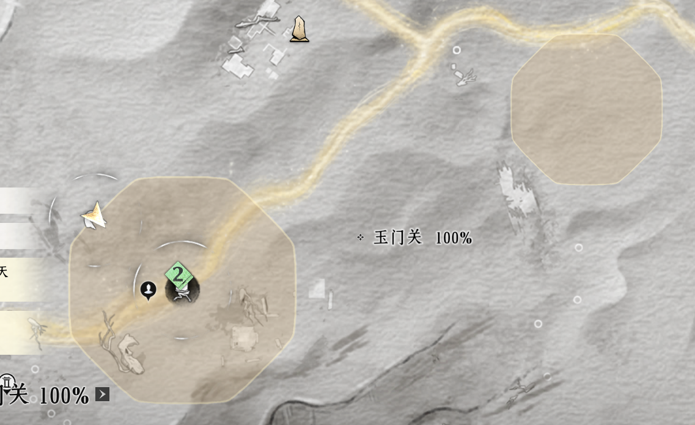

河西奇珍
河西五色琉璃彩
主要獎勵：10個心法書頁，需要200個五色琉璃彩兌換。
如何收集
需要在河西玉門關地圖白天，出現特定天氣的條件下，地圖會如下圖出現這樣的大型區域提示，這時候就可以過去采集啦。

到達附近位置后會出現較大只，有殘影的金甌鳥。用遠程武器比較容易打，它們會掉落小金堆，其中有掉落物品“五色琉璃彩”，每天獲取上限99個。
如何兌換
到玉門關胡楊集傳送點附近（見下圖黑色NPC標點），找到樹上的陳七七兌換。

可以兌換的物品如下圖（心法箱子需要200個琉璃彩兌換完成）：